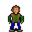

Little Hettar¶Where to find Little Hettar: Blackwater Mountain: Blackwater mountain 55
{ .sprite }
| Type | NPC (talk only; never fought) |
| Role | Starts Where is Norry? |
| Found in | Blackwater Mountain |
| Introduced | v0.7.12 |
Quests¶
- Where is Norry?: stages 10, 20, 30, 80, 90
Dialogue simulator¶
Set your quest stages and items, then talk to Little Hettar. Same rules as the game: same checks, same options, same effects.
Rules verified against v0.8.18 game code (ConversationController.java) and dialogue data.
Dialogue (17 lines)
Exactly as in the game files. Each line appears once; links jump to where a choice leads.
hettar (silent check: the first matching branch below is taken)
- branch 1 (if reached stage 90 of Where is Norry?) → hettar_90
- branch 2 (if reached stage 80 of Where is Norry?) → hettar_80
- branch 3 (if reached stage 50 of Where is Norry?) → hettar_50
- branch 4 (if reached stage 30 of Where is Norry?) → hettar_30
- branch 5 (if reached stage 20 of Where is Norry?) → hettar_20
- branch 6 (if reached stage 10 of Where is Norry?) → hettar_10
- branch 7 → hettar_1
hettar_90 Little Hettar: “My poor Norry! Why did you have to die so young? * Sob *”
- Next → hettar_90_10
hettar_80 Little Hettar: “Thank you again a thousand times for rescuing my little Norry!”
hettar_50 Little Hettar: “Haha! You know what? Norry has come back all alone! You have made all the way down unnecessarily.”
- “Now guess who had persuaded him to do so? He was absorbed by a pile of monster bones.” → hettar_50_10
hettar_30 Little Hettar: “I can read it in your face - there is no hope for Norry.”
- “This brute attacked me, so I had to kill it.” (if killed 1× Wolfhound) → hettar_10_6
- “This brute growled at me, but I got away and let it live.” (if reached stage 1 of Hettar dog story flags (hidden flag); NOT killed 1× Wolfhound) → hettar_20
- “I am still searching.” → conversation ends
hettar_20 Little Hettar: “Please go down there and look for my doggie. Maybe he is injured? Bring him back! You must!”
- “OK, I'll do it.” (if NOT killed 1× Wolfhound) → hettar_20_10
- “This brute attacked me, so I had to kill it.” (if killed 1× Wolfhound) → hettar_10_6
- “Eh, I have to leave.” → conversation ends
hettar_10 Little Hettar: “Please help to find Norry. He is my only friend, and he is helpless without me.”
- “How can I help you?” → hettar_20
- “The wolfhound down there had brown fur with a white patch on the breast. He was enjoying himself gnawing some huge…” (if reached stage 1 of Hettar dog story flags (hidden flag)) → hettar_10_4
hettar_1 Little Hettar: “Norry! Nooorryyyy!”
- “Hush! Don't make such noise with all these monsters around!” → hettar_1_4
- “Who is Norry?” → hettar_1_2
hettar_90_10 Little Hettar: “Go away! I hate you!”
hettar_50_10 Little Hettar: “Oh. Thank you then.” — effects: sets stage 80 of Where is Norry?
hettar_10_6 Little Hettar: “[Hettar fell on the floor] Nooo! What did you do?!” — effects: sets stage 90 of Where is Norry?
hettar_20_10 Little Hettar: “Great! Go immediately, as long as he might be alive still.” — effects: sets stage 20 of Where is Norry?, removes monsters from blackwater_mountain55, spawns monsters on blackwater_mountain55
- “I hope he will follow me.” (if NOT reached stage 30 of Where is Norry?) → hettar_20_30
- “I hope he will follow me.” (if reached stage 30 of Where is Norry?) → hettar_20_20
- “I have no time just now. I'll be back soon.” → conversation ends
hettar_10_4 Little Hettar: “This must be him! Go and get him here - be quick!”
- “That would be of no use. This brute had attacked me, so I had to kill it.” (if killed 1× Wolfhound) → hettar_10_6
- “This brute growled at me, but I got away unharmed.” (if NOT killed 1× Wolfhound) → hettar_20
- “Eh, I have to leave.” → conversation ends
hettar_1_4 Little Hettar: “I can see these Gornauds myself. That's why I must find Norry urgently. Nooorryyyy!”
- “Who is Norry?” → hettar_1_2
hettar_1_2 Little Hettar: “Norry is my little doggie. He fell down the steep slope and has not found his way back yet.” — effects: sets stage 10 of Where is Norry?
- “Oh dear.” → hettar_10
- “A dog! He will be back soon... I better go now.” → conversation ends
- “I have seen a great wolfhound down there a short while ago. But you say you are missing a little doggie.” (if reached stage 1 of Hettar dog story flags (hidden flag)) → hettar_10
hettar_20_30 Little Hettar: “Good that you have mentioned it. I'll give you a nice raw piece of Wyrm meat that I have as food for Norry. He loves them.” — effects: sets stage 30 of Where is Norry?, gives 1× Wyrm meat
hettar_20_20 Little Hettar: “I gave you my last piece of Wyrm meat for Norry. Did you lose it?”
Version history¶
| Version | Change |
|---|---|
| v0.7.12 | Added Dialogue: 17 lines added |
Verified against v0.8.18 and every earlier release back to v0.7.0 (game data compared release by release).
Behind the scenes¶
How the game data handles this character. Not needed for playing.
Technical information
| Entry ID | hettar |
| Type (wiki) | NPC |
| Spawn group | hettar |
| Loot table | – |
| Conversation | hettar |
| Faction | – |
| Movement | – |
| Icon | monsters_ld1:20 |
| Defined in | res/raw/monsterlist_brimhaven_2b.json |
Raw data:
{
"id": "hettar",
"name": "Little Hettar",
"iconID": "monsters_ld1:20",
"monsterClass": "humanoid",
"spawnGroup": "hettar",
"phraseID": "hettar"
}
Community notes¶
Written by players, not generated from game data. Observations: what players notice in-game · Lore: the in-world story · Trivia: real-world facts, references, development history · Theory / speculation: unconfirmed ideas; may just be unfinished content
Observations¶
No notes yet. Contributions are welcome: add a note.
Lore¶
No notes yet. Contributions are welcome: add a note.
Trivia¶
No notes yet. Contributions are welcome: add a note.
Theory / speculation¶
No notes yet. Contributions are welcome: add a note.
Data from v0.8.18